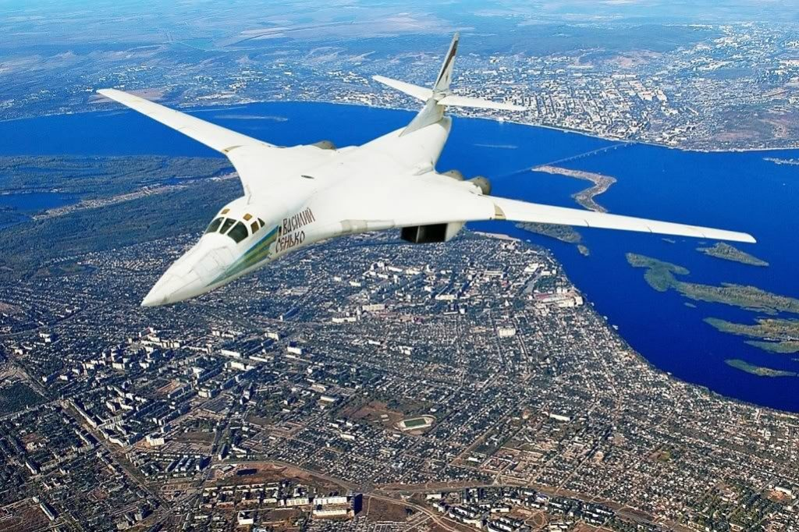
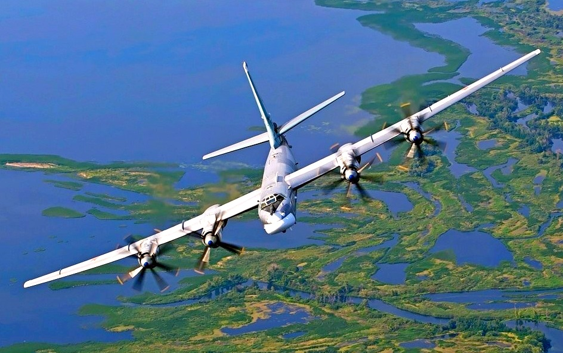
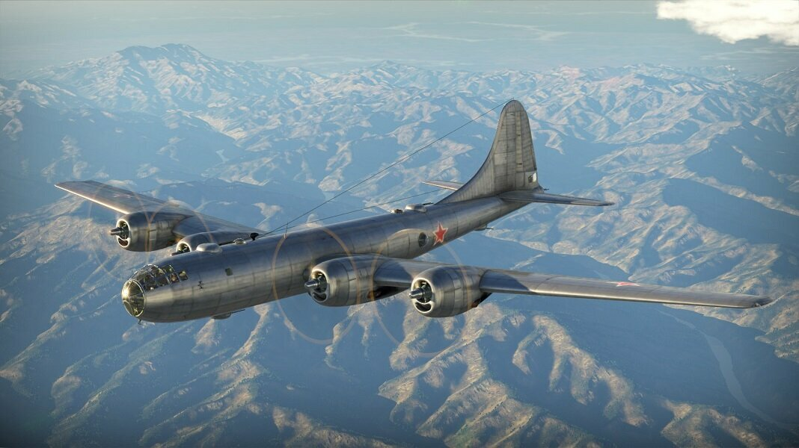

Главная
Бомбардировщик
Военный самолёт, предназначенный для поражения наземных, подземных, надводных, подводных объектов средствами бомбового и/или ракетного вооружения.
-
Ту-160 (заводское обозначение: «изделие 70», обозначение разработчика — «К», по кодификации НАТО: Blackjack — «Блэкджек») — сверхзвуковой стратегический бомбардировщик-ракетоносец с крылом изменяемой стреловидности, разработанный в ОКБ Туполева в 1970-х годах. Главный конструктор — В. И. Близнюк.
Является самым крупным и самым мощным[7] в истории военной авиации сверхзвуковым самолётом и самолётом с изменяемой стреловидностью крыла, а также самым тяжёлым боевым самолётом в мире, имеющим наибольшую среди бомбардировщиков максимальную взлётную массу. Это также самый скоростной бомбардировщик из находящихся на вооружении. Среди лётчиков получил прозвище «Белый лебедь»[8].
На самолёте установлено 46 мировых рекордов.
-
Ту-95 (проект «95», изделие «В», по кодификации НАТО: Bear — «Медведь») — советский и российский турбовинтовой стратегический бомбардировщик-ракетоносец, самый скоростной в мире самолёт с турбовинтовыми двигателями[3]. До настоящего времени — единственный в мире серийный бомбардировщик и ракетоносец с турбовинтовыми двигателями. Являлся советским символом обеспечения военно-стратегического паритета[4] в холодной войне. Остаётся на службе как носитель крылатых ракет, в том числе таких, как Х-101, благодаря более низкому расходу топлива, чем у реактивных самолётов, а главное — большей скрытности от спутников SBIRS, способных наблюдать за крупными стратегическими бомбардировщиками с реактивными двигателями по выхлопам из последних. National Interest отмечает, что довольно наивно считать Ту-95 «устаревшим оружием», так как фактически от подобного самолёта ничего не требуется, кроме как летать на большую дальность, а реальным его оружием являются новейшие крылатые ракеты — такие как X-101, которые при дальности 5500 км позволяют Ту-95 «безнаказанно» атаковать цели за пределами радиусов действия любых систем ПВО. Практическое применение Ту-95 в Сирии доказало, что самолёт не является «абстрактным средством ядерного сдерживания», а может реально использоваться в современных локальных войнах.[5]
Общее количество разработанных вариантов самолёта «95», включая серийные модификации, опытные образцы, летающие лаборатории и неосуществлённые проекты, приблизилось к пятидесяти, а общее количество выпущенных машин — к 500 ед.[6]
На базе модификаций Ту-95 были созданы летающие лаборатории различного назначения, пассажирский межконтинентальный лайнер — Ту-114 и его проектный транспортный вариант. В свою очередь, на базе Ту-114 был создан боевой самолёт ДРЛО — Ту-126. Прямым развитием проекта «95» на более высоком авиационно-техническом уровне явился вариант самолёта ПЛО, который в серии образовал модификационный ряд самолётов семейства Ту-142 различного боевого назначения.
-
Ту-4 (изделие «Р», по кодификации НАТО: Bull — «Бык») — поршневой советский стратегический бомбардировщик, состоял на вооружении ДА ВВС СССР с 1949 года до начала 1960-х годов. Самолёт является копией американского бомбардировщика В-29, воспроизведённой методом обратной разработки. При этом его конструкция, оборудование, вплоть до интерьера гермокабин, были строго скопированы с американского образца, за исключением пушечного вооружения, винтомоторной группы силовой установки и радиостанции. Советские двигатели имели мощность 2400 л. с. по сравнению с 2200 л. с. у оригинала. Пушечное оборонительное вооружение (10 скорострельных пушек калибра 23 мм вместо 12 пулемётов калибра 12,7 мм у В-29) значительно повысило обороноспособность советской «суперкрепости». В СССР самолёт Ту-4 был последним серийным тяжёлым бомбардировщиком с поршневыми двигателями.
Дальность Ту-4 — 5100 км — не являлась межконтинентальной, поэтому он относился в ВВС СССР к классу дальних бомбардировщиков. Вплоть до середины 1950-х годов, когда в СССР ещё не были развёрнуты эскадрильи тяжёлых стратегических бомбардировщиков нового поколения, основную ударную мощь составляли Ту-4, оснащённые системой дозаправки топливом в воздухе и способные нанести ответные удары по передовым базам США в Западной Европе, в том числе в Англии.
Освоение серийного производства самолётов Ту-4 обеспечило переход советского тяжёлого самолётостроения в кратчайшие сроки на новый, более высокий технологический уровень. Начиная с Ту-4, все элементы оборудования в советском самолётостроении были сведены в системы. На Ту-4 установлена первая в СССР и в мире система дистанционного управления, разработанная Всесоюзным заводом № 118 (ныне ОАО Московский научно-производственный комплекс «Авионика» имени О. В. Успенского).